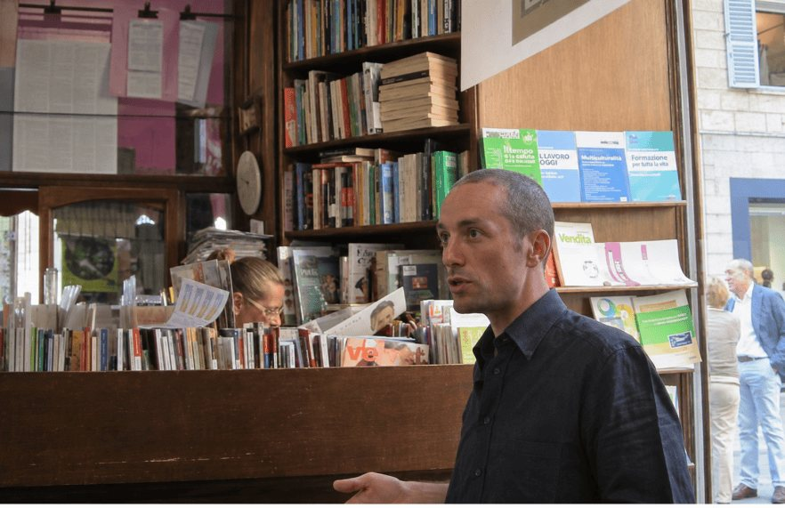
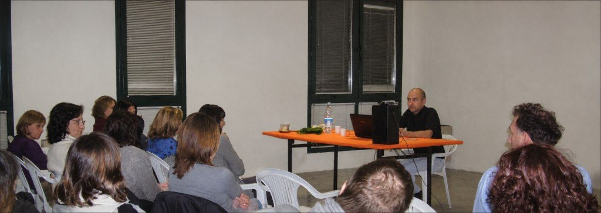

About the Editor
My name is Simone Pozzi. I conceived and edit Duhovno nasleđe Balkana, an independent cultural project devoted to the spiritual history of the Balkans, with particular attention to Serbia and Bogomilism.

How the project began
I have long been interested in dissident religious traditions and in the questions they raise about faith, authority, and conscience. Studying Bogomilism led me to look more closely at Serbian religious history and the connections among Balkan communities.
The project grew from a wish to explore these topics in an accessible way while grounding the work in sources and studies readers can consult. It does not claim to speak on behalf of Serbia or the Balkans: it offers a personal research pathway that is open to discussion and correction.
My role and the project’s limits
I choose the topics, write the contributions, and gather bibliographical references. The site is independent and is not affiliated with a university or institution. I do not present it as a peer-reviewed academic publication; the aim is to build documented cultural work and make the path to its conclusions visible.
The pages therefore seek to distinguish historical testimonies from scholars’ reconstructions and from my interpretations. When a question is controversial, I say so; when a source is insufficient to support a claim, I avoid presenting it as certain. Documented comments and corrections are welcome.
A project distinct from my personal spiritual research
My personal interest in Gnosis and spiritual traditions is part of my own path, but it is not the criterion by which this site establishes historical facts. Personal convictions may suggest questions; they do not replace sources or determine answers in advance.
The comparison between medieval dissent and modern freedom of conscience is therefore identified as philosophical reflection. I do not claim a direct historical continuity between the Bogomils and contemporary Serbia, nor do I attribute today’s language of rights to people of the past.
Open to dialogue
I welcome discussion with scholars, translators, readers, and cultural institutions working on the religious and cultural history of the Balkans. Dialogue can help check references, improve translations, identify bibliography, and develop shared initiatives. Any collaboration will be described transparently and only after an explicit agreement.
Public talks

Learn more
The Project: aims and areas of work.
Method and Sources: editorial criteria and bibliography.
Contact: send comments, questions, or collaboration proposals.